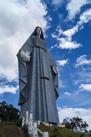

Arte Urbano
Es una forma de expresión artística que ha ganado mucha popularidad en la última década.

Monumentos
Es una obra pública en memoria de alguien o de algo, puede ser una construcción que posee valor artístico, arqueológico o histórico.